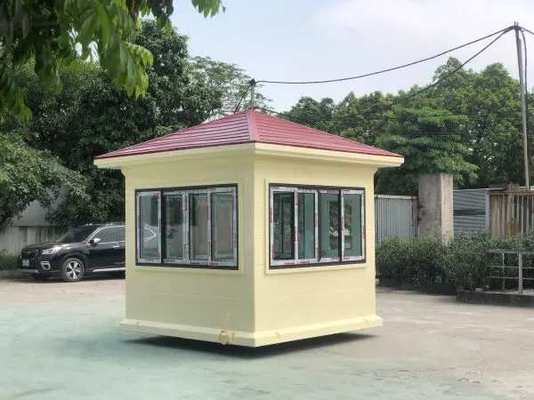
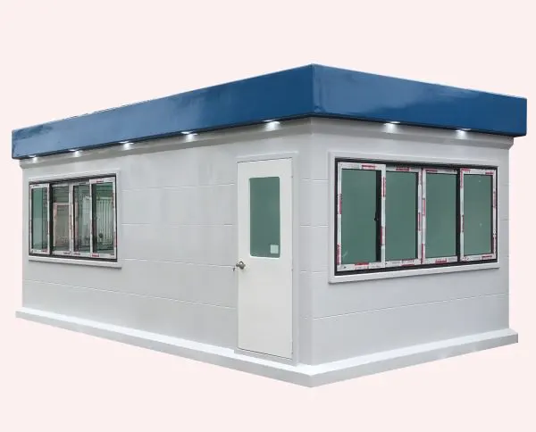
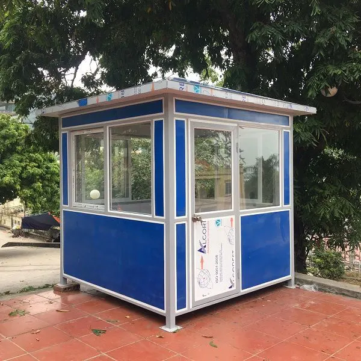
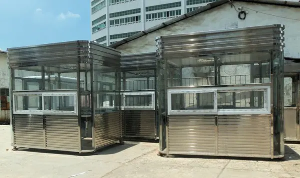
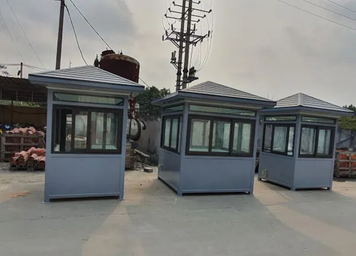
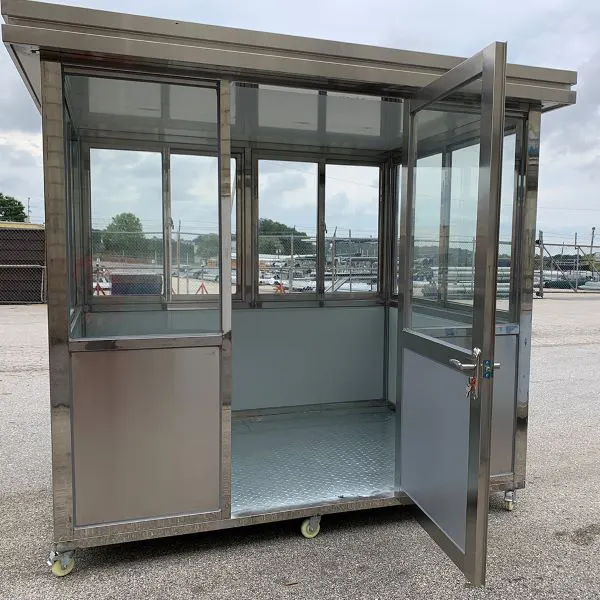
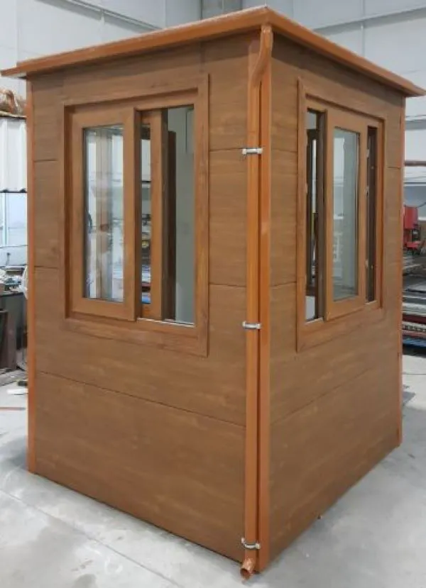
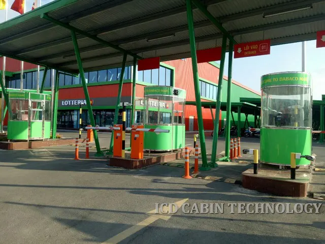

应该用什么材料设计保安岗亭才合适？正确选择材料不仅能确保耐用性，还会影响美观和成本。
用什么材料设计保安岗亭能确保耐用且节省成本？马上参考下面的文章获取详细解答！
保安岗亭是一种通常安装在机关、工业园区、建筑工地等区域的产品，用于控制这些地方的出入。目前市场上有很多不同类型的保安岗亭，尺寸、材质、颜色各异。这里提出的问题是：应该用什么材料设计保安岗亭？保安岗亭的标准尺寸是多少？马上参考下面的文章获取详细解答。

选择保安岗亭的材质和尺寸，确保耐用、美观、经济
选择保安岗亭设计材质时需要考虑的因素
在设计保安岗亭时，选择合适的材料起着关键作用，直接影响耐用性、美观性和使用效果。以下是需要重点考虑的因素，以确保选择符合标准的保安岗亭材料。

设计保安岗亭的材料需要考虑的因素
- 耐久性与耐候性：保安岗亭通常放置在户外，因此材料需要具备防晒、防雨、防风及抵御环境影响的能力。较为理想的材料有不锈钢、镀锌钢、铝塑复合板和复合材料（FRP）。这些材料的共同特点是坚固耐用、不易腐蚀、抗压耐热，能够确保保安岗亭拥有较长使用寿命。
- 隔音与隔热性能：在靠近主干道、工厂或工地等噪音较大的区域，隔音效果至关重要。此外，隔热性能也有助于在炎热条件下为保安人员提供更舒适的工作环境。因此，应优先选用带有隔热泡沫层、板式墙体或双层玻璃的材料，以确保良好的工作环境。
- 安全性与防护性：保安岗亭需要确保内部人员的安全，并防范来自外部的入侵风险。所用材料必须坚固、抗压性强，并可集成摄像头、警报器、门锁系统等安防设备。此外，窗户应选用钢化玻璃以增强防护性。
- 美观性与建筑协调性：保安岗亭的设计应与周边环境如城市社区、度假区、工厂或办公大楼相协调。铝合金玻璃或仿木纹复合材料等材料不仅美观度高，还能营造专业印象，与整体建筑风格保持一致。
- 施工、运输与维护便利性：选择材料时需考虑安装和维护的灵活性。应优先选用重量轻、便于运输和施工的材料，如复合材料或铝合金。同时，材料应易于清洁且不易受天气影响，以降低长期维护成本。
- 投资成本：根据预算和使用目的，应谨慎选择合适材料。复合材料、隔热板等常见材料价格适中，适合短期项目。而不锈钢、铝合金玻璃虽然成本较高，但具备更优的耐久性和美观性，适用于对形象要求较高的长期工程。
应当选用何种材料来设计保安岗亭？
保安亭通常放置在室外。为了保持耐用性和抵御恶劣天气，选择保安亭的设计材料至关重要。根据目前的生产材料标准，保安亭主要由两种材料构成：不锈钢岗亭和钢框架包覆合金岗亭。

应该用什么材料设计保安亭
不锈钢保安亭设计
该产品采用高级不锈钢框架，地板采用防滑铝材，并使用透明玻璃门便于观察。不锈钢保安亭配备齐全的配件，如电源插座、隐藏式电线设计和电源开关。岗亭的宽度和高度可根据您的要求设计和制造。
这种保安亭最突出的优点是能够抵御外界天气和环境的影响，具有出色的耐用性。此外，不锈钢材质还提升了岗亭内部空间的美观性。
然而，不锈钢保安亭通常需要固定安装，如果需要移动则会带来困难。

不锈钢保安亭
钢框架包覆合金保安亭设计
这种保安亭由不锈钢框架和铝合金包覆板构成。钢框架包覆合金保安亭的配件包括：开关、电源插座、单桌等。
这种保安亭设计紧凑，易于找到放置位置，并且便于移动。款式和颜色多样，有多种价格，以满足您的审美需求和财务状况。
尽管有诸多优点，但这种保安亭通常不如不锈钢岗亭豪华，内部设施也明显较少。
高级复合材料保安亭设计（FRP、WPC等）
保安岗亭采用优质复合材料，如FRP（玻璃纤维增强塑料）或WPC（木塑复合材料），在耐腐蚀、防水和隔热方面备受好评。这是海边、工业区或高湿度地区等恶劣环境的理想选择。此类材料的突出优点是轻便、耐用、防虫蛀，且易于施工和移动。同时，复合材料可灵活成型，适合从现代到仿古等多种设计风格。
铝合金框架结合钢化玻璃的保安岗亭设计
铝合金框架结合钢化玻璃的保安岗亭外观现代、典雅，适合办公楼、高档住宅区或商业中心。铝合金框架轻便但坚固，不易生锈，而钢化玻璃确保良好的视野和高安全性。这种设计还能使岗亭内部空间明亮通透、专业，便于安装摄像头、灯具、空调等观察设备。
镀锌钢隔音保安岗亭设计
镀锌钢因其卓越的硬度、承载能力和长使用寿命而成为常见选择。当内部结合矿棉或PU泡沫等隔音材料时，保安岗亭将成为安静的工作空间，适合工地、工厂或收费站等噪音较大的区域。此外，镀锌层使岗亭具有良好的防锈性能，易于维护，并能在恶劣天气条件下稳定运行。

镀锌钢隔音保安岗亭
镀锌钢板或彩涂钢板保安岗亭设计
由镀锌钢板或彩涂钢板制成的保安岗亭具有价格合理、施工时间短和耐用性高的优点。彩涂钢板带有隔热层，可在晴天降低内部温度，而镀锌钢板在潮湿环境中具有有效的防锈性能。此类岗亭适用于工业园区、工厂、停车场或需要节省成本但仍保证基本功能的工程。

镀锌钢板或彩涂钢板保安岗亭
使用人造板或实木设计的保安亭
鉴于对美学和统一建筑空间的高要求，使用人造板或实木设计的保安亭是度假村、高端度假区或别墅的精致选择。实木带来质朴、奢华的美感，而人造板如果在技术上处理得当，则具有抗翘曲、防虫蛀的能力。然而，木质材料需要定期维护，以长期保持其耐用性和美观性。

使用人造板或实木设计的保安亭
适合各类保安亭的空间
选择合适的保安亭类型不仅取决于材质，还需考虑每个使用空间的特殊性。以下是针对特定区域的保安亭设计建议，以确保最高的使用效率和美观性。
居民区、公寓、新城区
在现代化居民区和城区，保安亭不仅是安保人员的工作场所，还有助于营造专业、整洁的整体景观印象。因此，应选用设计精巧的亭型，采用铝玻璃、仿木漆复合材料或静电喷涂钢架等材料，既确保功能，又与周围建筑和谐统一。
工厂、工业区
对于工厂或工业区等恶劣环境，耐用性和承重能力是首要要求。此类空间中的保安亭应采用镀锌钢、隔热波纹板或FRP复合材料设计-这些材料具有耐腐蚀、隔音且能承受持续运行条件的能力。此外，还需注意隔音和通风因素，以确保使用者的健康。
度假村、度假区
在度假村或高端休养区等高档空间，保安亭不仅确保安全，更是景观设计的一部分。这些岗亭应采用天然木材、塑木或仿木纹漆复合材料制成，营造亲切、自然且奢华的感觉。设计需与整体建筑风格协调，结合绿植、自然光线，并可针对度假村园区内不同区域进行定制。
学校、医院
在人员密集且对安保有特殊要求的区域，如学校和医院，保安亭应采用钢化玻璃设计，以便于观察并快速处理情况。优先选用铝合金或镀锌钢框架，因其耐用性高、安全、易于清洁，且适合公共环境。需注意内部空间，确保长时间值班人员的舒适度。
临时或移动工程
在临时建筑工地或需要频繁移动的位置，保安亭应采用轻质材料如复合材料、镀锌钢板或铝合金框架制造，以便于拆装和运输。设计需简洁紧凑，但仍需保证基本功能如遮阳篷、通风、安全锁，并能根据实际施工位置轻松定制。
标准保安亭尺寸
在选定合适材料设计保安亭后，下一步重要工作是确定标准尺寸。选择合适的尺寸不仅能优化使用功能，还能确保与安装空间和谐统一。目前，常见的保安亭尺寸包括：
1.2×1.2×2.4米；1.2×1.5×2.4米；1.5×1.5×2.4米；1.5×2.0x2.4米；2.0×2.0x2.4米，以及根据特殊订单要求的更大尺寸。
- 对于面积较大的工程，需要安排多名保安人员，如工业园区、度假村、城区、学校等，您应选择尺寸为1.5×2.0米及以上的岗亭型号。这些型号足够宽敞，可容纳3-4名保安在内值守，并可配备风扇、办公桌或迷你文件柜。四周多玻璃窗的设计还能帮助工作人员实现360度观察，有效确保安全。
- 对于空间受限的位置，如停车场入口、小型居民区、次要入口等，您可以选择尺寸较小的岗亭型号，如1.2×1.2米、1.2×1.5米或1.5×1.5米。这些型号不占用太多面积，易于安装在用地受限的区域，同时节省投资成本，但仍能为一名值班保安提供充足的基本功能。

商场工程入口管控岗亭示例
以上是我们想向您提供的关于保安岗亭的全部信息。如需咨询和订购产品，请立即联系越南工业与城市发展股份公司，联系???? Tel: 024. 2200 9188 Hot-line: 0935 482 688。我们是当前领先的保安岗亭设计信誉单位。我们的所有产品均享有全面保修并送货上门。选择我们，您完全可以对产品质量放心。